Overview
This guide will walk you through creating an EMDK For Android application that will use MX features introduced in EMDK for Android API to perform device configurations. MX represents a suite of Enterprise Features on top of standard, commercially available Android Open Source Project. So this tutorial will focus on controlling access to the device's applications using Access Manager feature of Mx. The Access Manager feature allows you to configure a set of applications that will be allowed to run and install on the device. When a profile with this feature is enabled, the device will only allow user installed applications on the Whitelist to be executed and/or installed (some applications that are part of the default operating system will still be available). To disable the Whitelist, you would select "Single User Without Whitelist". Overall, the Access Manager supports following features.
Note: "Enable Whitelist" refers to "Single User Mode with Whitelist". "Disable Whitelist" refers to "Single User Mode without Whitelist" options in the wizard.
1. Enable/Disable single user mode white list:
This feature allows user to Enable or Disable the single user mode white list. When the single user white list mode is enabled, user can see only those apps that have been added to the white list and have access restrictions. The user can see all the applications when single user mode white list is disabled.
2. Add packages to the white list:
When the single user mode white list is enabled, user can add application package to the white list and set restricted access to that particular application (Ex. com.symbol.emdkmxaccessmanagertutorial). user can also add multiple applications to the white list separated by commas to control access across multiple applications (Ex. com.symbol.emdkmxaccessmanagertutorial,com.symbol.emdkmxclocktutorial,com.symbol.mxgprstutorial).
Note: Make sure to add executing EMDK application to the white list in order to set access restrictions on other applications. otherwise your application will lose control of the Whitelist configuration and you will not be able to change the behavior until you perform Enterprise Reset on the device to get the default settings back.
3. Remove specific packages from the white list:
User can remove specific package(s) from the white list. If we want to remove multiple applications from white list, we need to specify their package names separated by commas (Ex. com.testapp1, com.testapp2, com.testapp3).
Note: Package names are unique identifiers of Android applications. Hence the API requires package names to refer any specific application.
4. Remove all packages from the white list:
When the device has lots of applications in the white list and if we want to remove all applications from white list then we can use this feature of Access Manager. It prevents user from adding all the package names manually, which could be time consuming.
5. Control the behavior of the system settings menu when in single user mode white list:
When the single user mode white list is enabled, user can control the behavior of the system settings menu that lets user control the level of access to the applications added in the white list. The user can either provide "Full Access" or "Reduced Access" to the applications that have been added to the white list.
So now we will create a tutorial to demonstrate how to Add/Remove applications to/from single user mode white list and observe the difference when the single user white list mode is changed (Enabled/Disabled) programmatically.
Creating The Project
Note: Provide "MxAccessManagerTutorial" as the project name for this tutorial.
Create a new project with Android Studio, click here.
Adding The Access Manager Profile Feature
Click here to see how to add a specific feature to the Profile Manager.
Provide "AccessManagerProfile" as the Profile Name for this tutorial.
Note: You can provide any Profile Name but make sure to access it with the similar name in the Android code.
Now, you can see all these MX features on the left hand side of the Profile Editor window. Select the "Access Manager" feature from the list and click "Right Arrow".
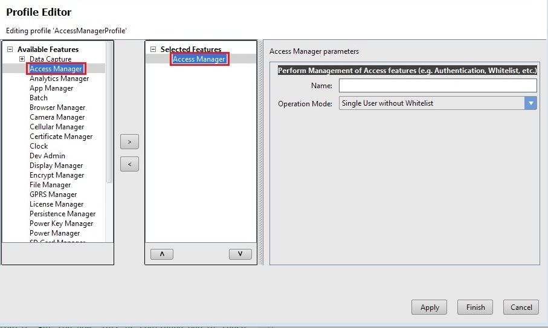
As mentioned earlier you can see the drop down showing two options in the operation Mode. First one is Single user without whitelist and second is single user with whitelist. We would demonstrate both of these feature programatically using Access Manager API later in this tutorial. But for now, lets us configure one of these two operation modes from the wizard. This is to show you that we can modify any MX feature both programmatically as well as using wizrad. Hence select Operation mode as "Single User Without Whitelist".
Provide some name to refer this feature programmatically in order to modify it (Ex. MyAccessMgr).You can also keep the "Name" field empty.
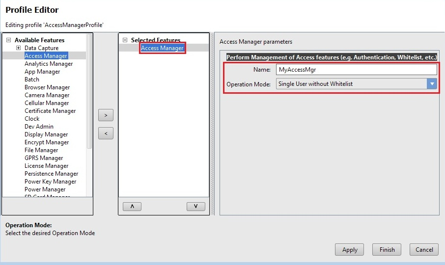
Click Apply to apply the settings we provided. This setting would display all the applications that have not been added to the whitelist.
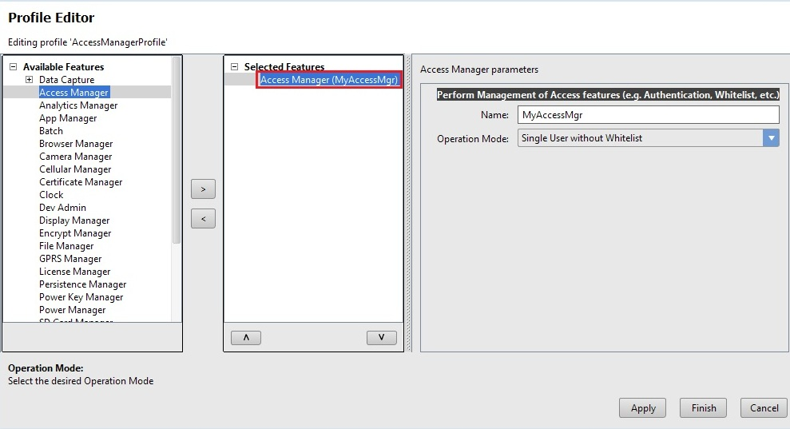
Click Finish and your Access Manager profile is created that would display all applications, which are not in the whitelist. We would configure rest of the features programmatically later in this tutorial.
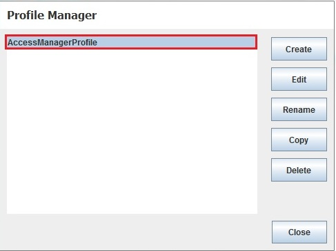
Click "Close".
Note:
Now the "EMDKConfig.xml" is created under "\assets" folder. This file will contain a definition of all of your profiles that you create.You can inspect the EMDKConfig.xml to see it is reflecting the changes made to the parameters via EMDK Profile Manager GUI earlier. However, it is advised that this file not be manually updated and only be controlled via the Profile Manager.
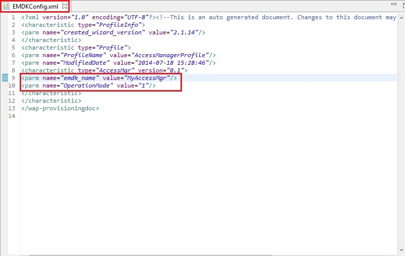
Enabling Android Permissions
Modify the Application's Manifest.xml to use the EMDK library and to set permission for the EMDK.
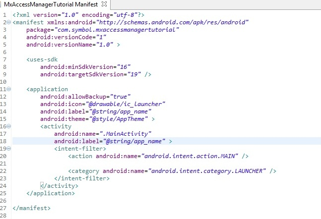
You must first enable permissions for 'com.symbol.emdk.permission.EMDK':
<uses-permission android:name="com.symbol.emdk.permission.EMDK"/>Then you must enable the library:
<uses-library android:name="com.symbol.emdk"/>When done, your manifest.xml should look like:
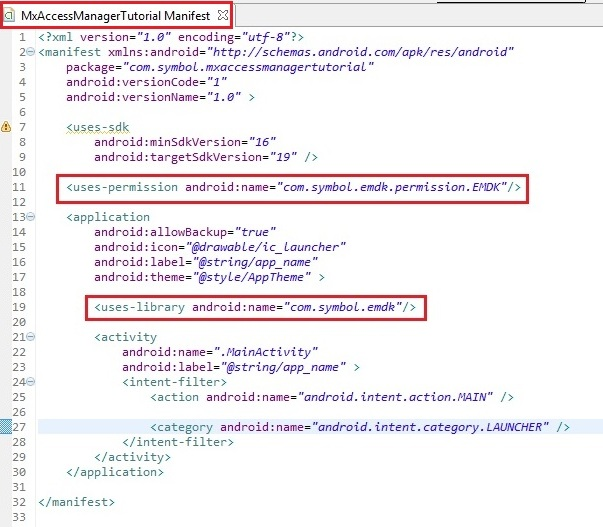
Adding Some Code
Now we will start to add some code.
First you must add references to the libraries:
import com.symbol.emdk.*; import com.symbol.emdk.EMDKManager.EMDKListener; import android.widget.Toast;Then you must extend the activity to implement EMDKListener.
public class MainActivity extends Activity implements EMDKListener {
}.. .. .. .. .. .. ... @Override public void onClosed() { // TODO Auto-generated method stub } @Override public void onOpened(EMDKManager emdkManager) { // TODO Auto-generated method stub }We will now create some global variables to hold the profile name as well as instance objects of EMDKManager and ProfileManager with a status variable while applying the profile. Some of the variables are used to hold the name, type and description in case of any errors. These variables would be used throughout the code.
Note: Verify the Profile name in the code with the one created in the Profile Manager. They both should be identical.
// Assign the profile name used in EMDKConfig.xml private String profileName = "AccessManagerProfile"; // Declare a variable to store ProfileManager object private ProfileManager profileManager = null; // Declare a variable to store EMDKManager object private EMDKManager emdkManager = null; // Contains the parm-error name (sub-feature that has error) private String errorName = ""; // Contains the characteristic-error type (Root feature that has error) private String errorType = ""; // contains the error description for parm or characteristic error. private String errorDescription = ""; // contains status of the profile operation private String status = "";In the onCreate method, we call getEMDKManager so that the EMDK can be initialized and checked to see if it is ready.
//The EMDKManager object will be created and returned in the callback. EMDKResults results = EMDKManager.getEMDKManager(getApplicationContext(), this); //Check the return status of getEMDKManager if (results.statusCode == EMDKResults.STATUS_CODE.SUCCESS) {
} else {// EMDKManager object creation success
}// EMDKManager object creation failedSo far your code should look like:
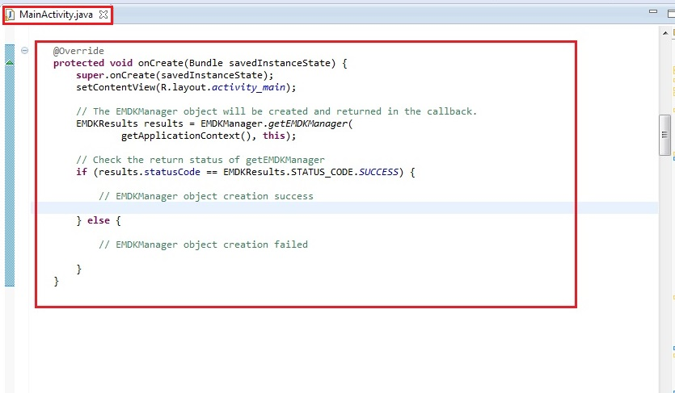
Now let's override the "onDestroy" method so we can release the EMDKManager resources:
@Override protected void onDestroy() { // TODO Auto-generated method stub super.onDestroy(); //Clean up the objects created by EMDK manager emdkManager.release(); }Your onDestroy method should now look like this:
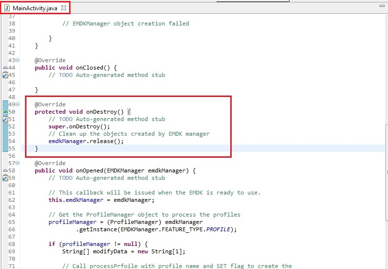
Now we need to use the
onOpenedmethod to get a reference to the EMDKManager. The EMDKListener interface will trigger this event when the EMDK is ready to be used. The EMDKListener interface must be implemented in order to get a reference to the EMDKManager APIs. This event will pass the EMDKManager instance and we assign it to the global variableemdkManagerthat we created in the previous steps. We then use that instance object to get an instance of ProfileManager and assign it to the global variableprofileManager. This is how we will interface with the APIs in the rest of the code:Note: Rename the argument of
onOpenedmethod fromarg0toemdkManager// This callback will be issued when the EMDK is ready to use. this.emdkManager = emdkManager; // Get the ProfileManager object to process the profiles profileManager = (ProfileManager) emdkManager .getInstance(EMDKManager.FEATURE_TYPE.PROFILE);Now that we have a reference to ProfleManager, we use it to install and activate the profile we built earlier using the
processProfilemethod. We could have also performed this action at a different time, say when someone pressed a button, but we chose to do it as soon as the EMDK was ready:if (profileManager != null) { String[] modifyData = new String[1]; // Call processPrfoile with profile name and SET flag to create the profile. The modifyData can be null. EMDKResults results = profileManager.processProfile(profileName, ProfileManager.PROFILE_FLAG.SET, modifyData); if (results.statusCode == EMDKResults.STATUS_CODE.CHECK_XML) { } else { // Show dialog of Failure AlertDialog.Builder builder = new AlertDialog.Builder(this); builder.setTitle("Failure"); builder.setMessage("Failed to apply profile...") .setPositiveButton("OK", new DialogInterface.OnClickListener() { public void onClick (DialogInterface dialog, int id) {
} }} }); AlertDialog alert = builder.create(); alert.show();This
processProfilemethod returns the result of applying a particular profile that we set using EMDK Profile Wizard in EMDKResults reference. If the profile is successfully processed, it returns the status asCHECK_XMLand then we go on and parse the response to get further details whether the profile was applied successfully or not. Otherwise we display a Failure message in a dialog.Note: 1. There is a difference between processing a profile successfully and applying a profile successfully.
Note: 2. If the status is other than
CHECK_XML, we are simply displaying a failure message. You can actually go ahead and check different types of status and display the appropriate message accordingly, which is not in the scope of this sample tutorial.Now we will call a method
handleEMDKResultin case ofCHECK_XMLstatus to handle this EMDKResults, which we will create in the next step.// Method call to handle EMDKResult handleEMDKResult(results);Your complete
onOpenedmethod should now look like this: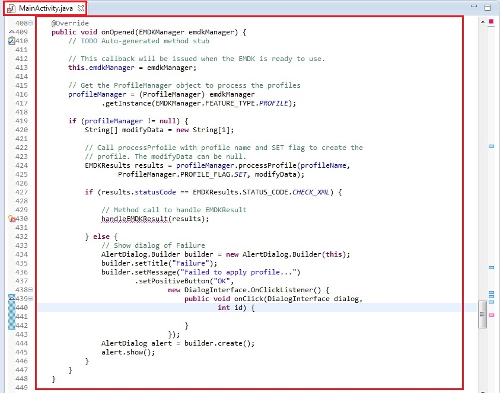
It shows error as we have not yet declared
handleEMDKResultmethod. So let us create this method, which would get the XML String response from EMDKResults, call theparseXMLmethod to parse it and eventually calldisplayResultsmethod to display output in a dialog, which we would be declaring in coming steps.// Method to handle EMDKResult by extracting response and parsing it public void handleEMDKResult(EMDKResults results) { // Get XML response as a String String statusXMLResponse = results.getStatusString();
}try { // Create instance of XML Pull Parser to parse the response XmlPullParser parser = Xml.newPullParser(); // Provide the string response to the String Reader that reads // for the parser parser.setInput(new StringReader(statusXMLResponse)); // Call method to parse the response parseXML(parser); } catch (XmlPullParserException e) { e.printStackTrace(); } // Method call to display results in a dialog displayResults();Your
handleEMDKResultmethod should now look like this: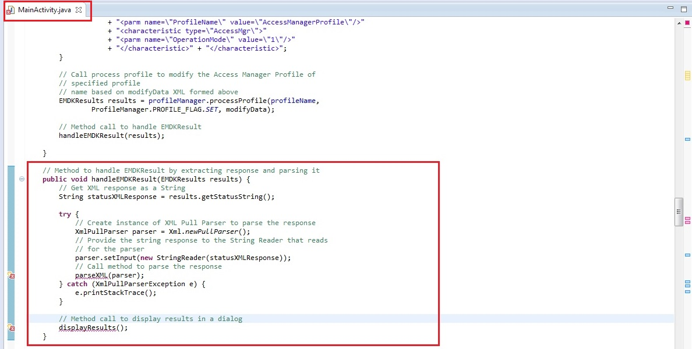
You will see few errors as we have not declared the respective methods to parse the response and display result. Lets do it one by one. In this step, we will create a method
parseXMLthat uses XML Pull Parser to parse the XML string response and set the status and error parameters if any.In the reponse, we are supposed to capture
nameanddescforparm-errortag,typeanddescforcharacteristic-errortag in case of any errors.// Method to parse the XML response using XML Pull Parser public void parseXML(XmlPullParser myParser) { int event; try { event = myParser.getEventType(); while (event != XmlPullParser.END_DOCUMENT) { String name = myParser.getName(); switch (event) { case XmlPullParser.START_TAG: // Get Status, error name and description in case of // parm-error if (name.equals("parm-error")) { status = "Failure"; errorName = myParser.getAttributeValue(null, "name"); errorDescription = myParser.getAttributeValue(null, "desc");
}// Get Status, error type and description in case of // parm-error } else if (name.equals("characteristic-error")) { status = "Failure"; errorType = myParser.getAttributeValue(null, "type"); errorDescription = myParser.getAttributeValue(null, "desc"); } break; case XmlPullParser.END_TAG: break; } event = myParser.next(); } } catch (Exception e) { e.printStackTrace(); }Your complete
parseXMLmethod should now look like: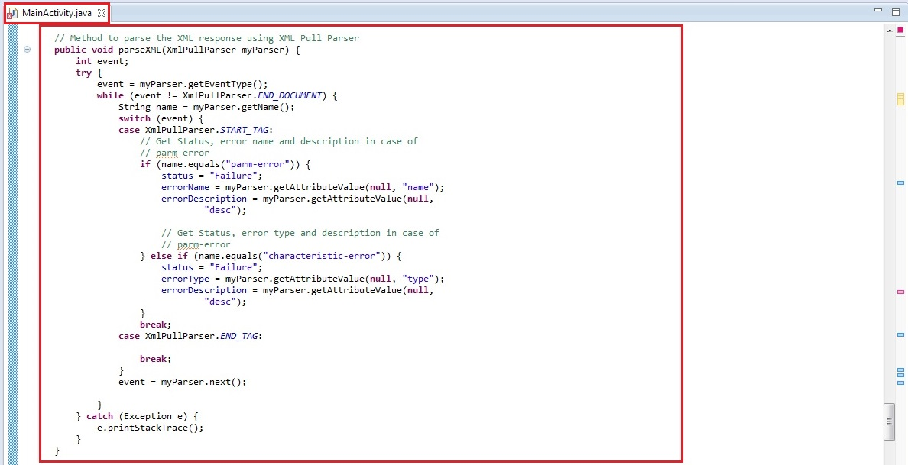
You will still see one error as we need to declare
displayResultsmethod to display the result of profile operation in a dialog. Before displaying the results, we should form the content of the result to be shown first, specifically in case of errors. This could be done by creatingbuildFailureMessagemethod.In this method, the error message in case of error is formed using following way:
- Name and description of error if the response contains
parm-error. - Type and description of error if the response contains
characteristic-error. - Name, type and description of error if the response contains both
parm-errorandcharacteristic-error.
The
buildFailureMessagemethod would have following code to match the above mentioned criteria.// Method to build failure message that contains name, type and // description of respective error (parm, characteristic or both) public String buildFailureMessage() { String failureMessage = ""; if (!TextUtils.isEmpty(errorName) && !TextUtils.isEmpty(errorType)) failureMessage = errorName + " :" + "\n" + errorType + " :" + "\n" + errorDescription; else if (!TextUtils.isEmpty(errorName)) failureMessage = errorName + " :" + "\n" + errorDescription; else failureMessage = errorType + " :" + "\n" + errorDescription; return failureMessage; }buildFailureMessagemethod should look like: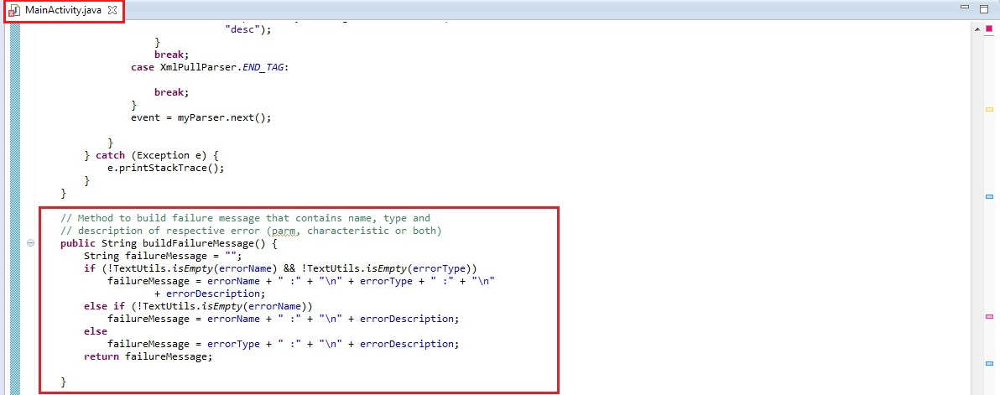
- Name and description of error if the response contains
In this step, we will add
displayResultsmethod to display the result of profile operation in a dialog. The dialog would display status asSuccessorFailurewith corresponding message based on the response of profile operation.// Method to display results (Status, Error Name, Error Type, Error // Description) in a // dialog public void displayResults() { // Alert Dialog to display the status of the Profile creation // operation of MX features AlertDialog.Builder alertDialogBuilder = new AlertDialog.Builder( MainActivity.this); if (TextUtils.isEmpty(errorDescription)) { alertDialogBuilder.setTitle("Success"); alertDialogBuilder.setMessage("Profile Successfully Applied..."); } else { // set title alertDialogBuilder.setTitle(status); // call buildFailureMessage() method to set failure message in // dialog alertDialogBuilder.setMessage(buildFailureMessage()); } alertDialogBuilder.setCancelable(false).setPositiveButton("OK", new DialogInterface.OnClickListener() { public void onClick(DialogInterface dialog, int id) { } }); // create alert dialog AlertDialog alertDialog = alertDialogBuilder.create(); // show it alertDialog.show(); }The method
displayResultsshould look like: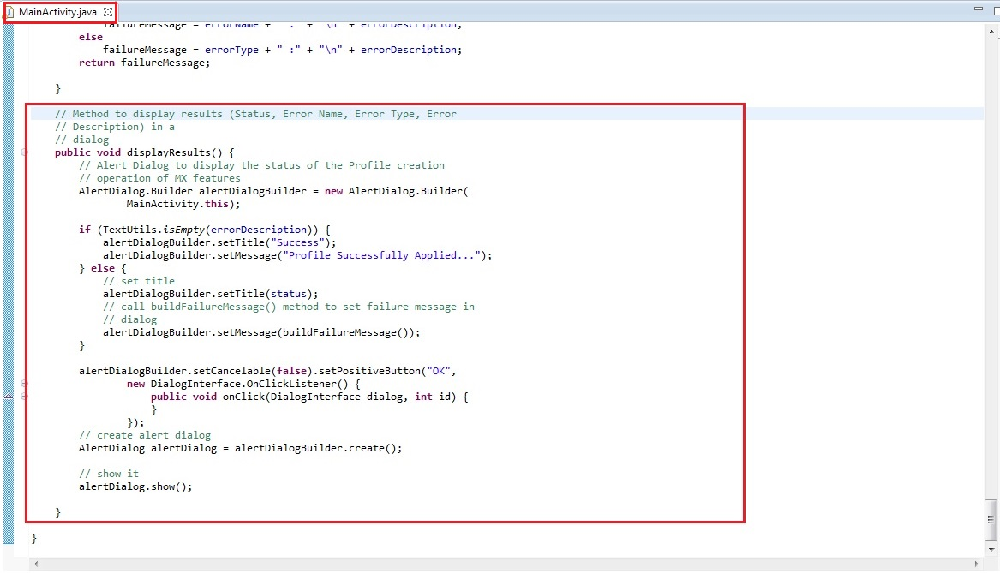
You can see that all the errors are gone.
If you run the application at this moment, whatever the settings you made in the wizard would be applied to the device. But we are not done yet. We also have to implement a way to modify Access Manager settings programmatically using MX API as it could be annoying to change the wizard settings repetitively and then run the application each time to see the changes. So let us implement that using following steps.
Declare some global variables for User Interfaces such as Drop-down (Spinner), Button, Edit Text, Radio Group and Relative Layout. Now declare some global variables for drop-down (Spinner) adapter that holds lists for various drop downs such as system settings, add package, remove package. We will also declare some global integers that would contain position of an item clicked by the user in each of the three drop-downs (Spinners).
// Relative Layout that contains entire view when the single user mode with // white list is enabled private RelativeLayout whiteListLayout; // Boolean that indicates whether single user mode with/without white list // (False for without and True for with white list) private boolean isWhiteListActive = false; // Drop Down that contains options for settings menu of the Access Manager private Spinner settingsAccessSpinner; // Drop Down that contains options for deleting packages from white list private Spinner deletePackageSpinner; // Edit Text that contains comma separated package names to be removed from // white list private EditText deletePackageEditText; // Drop Down that contains options for Adding packages to white list private Spinner addPackageSpinner; // Edit Text that contains comma separated package names to be added in the // white list private EditText AddPackageEditText; // Array Adapter to hold arrays that are used in various drop downs private ArrayAdapter<String> dataAdapter; // Radio Group for holding Radio Buttons that enable user to select option // for single user mode with or without white list private RadioGroup radioGroup; // Holds the position of user selected option in the settings drop down private int settingsSpinnerPosition = 0; // Holds the position of user selected option in the delete package drop // down private int deletePackageSpinnerPosition = 0; // Holds the position of user selected option in the add package drop down private int addPackageSpinnerPosition = 0; // Set Button that is used to implement changes made by user in the // Access Manager private Button setButton;So far the variables declared look like:
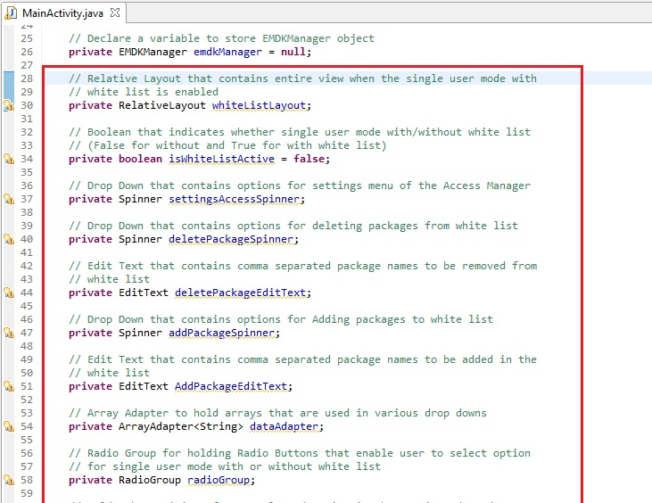
We will now add the layout for this application. This layout contains required View of this application. The view contains various drop downs for system settings menu, add package and drop package features. The view also contains two Radio Buttons to enable/disable white list mode. The layout also contains two Edit Texts that allow user to enter the package names to Add and Delete applications from the white list respectively when user enables the white list option from radio button. Finally the view contains a set button that implements all the changes made by the user.
Remove all the code, inside "res/layout/activity_main.xml" and add following code to form a view described above.
<ScrollView xmlns:android="http://schemas.android.com/apk/res/android"
android:layout_width="fill_parent"
android:layout_height="fill_parent" >
<RelativeLayout
android:layout_width="match_parent"
android:layout_height="wrap_content"
android:layout_margin="10dip" >
<RadioGroup
android:id="@+id/radioGroupAccess"
android:layout_width="wrap_content"
android:layout_height="wrap_content" >
<TextView
android:layout_width="wrap_content"
android:layout_height="wrap_content"
android:layout_margin="10dip"
android:text="Choose your Access Manager Option:"
android:textSize="14sp"
android:textStyle="bold" />
<RadioButton
android:id="@+id/radio_without_whitelist"
android:layout_width="279dp"
android:layout_height="wrap_content"
android:checked="true"
android:text="Single User Without Whitelist"
android:textSize="14sp" />
<RadioButton
android:id="@+id/radio_with_whitelist"
android:layout_width="match_parent"
android:layout_height="wrap_content"
android:text="Single User With Whitelist"
android:textSize="14sp" />
</RadioGroup>
<RelativeLayout
android:id="@+id/whitelist_layout"
android:layout_width="match_parent"
android:layout_height="wrap_content"
android:layout_below="@+id/radioGroupAccess"
android:visibility="gone" >
<Spinner
android:id="@+id/settings_access_spinner"
android:layout_width="match_parent"
android:layout_height="wrap_content"
android:layout_margin="8dip" />
<Spinner
android:id="@+id/delete_package_spinner"
android:layout_width="match_parent"
android:layout_height="wrap_content"
android:layout_below="@+id/settings_access_spinner"
android:layout_margin="8dip" />
<EditText
android:id="@+id/et_delete_package"
android:layout_width="match_parent"
android:layout_height="wrap_content"
android:layout_below="@+id/delete_package_spinner"
android:layout_margin="8dip"
android:hint="package names separated by commas"
android:textSize="14sp"
android:visibility="gone" />
<Spinner
android:id="@+id/add_package_spinner"
android:layout_width="match_parent"
android:layout_height="wrap_content"
android:layout_below="@+id/et_delete_package"
android:layout_margin="8dip" />
<EditText
android:id="@+id/et_add_package"
android:layout_width="match_parent"
android:layout_height="wrap_content"
android:layout_below="@+id/add_package_spinner"
android:layout_margin="8dip"
android:hint="package names separated by commas"
android:textSize="14sp"
android:visibility="gone" />
</RelativeLayout>
<RelativeLayout
android:layout_width="match_parent"
android:layout_height="wrap_content"
android:layout_below="@+id/whitelist_layout"
android:paddingBottom="20dip" >
<Button
android:id="@+id/buttonSet"
android:layout_width="wrap_content"
android:layout_height="wrap_content"
android:layout_alignParentBottom="true"
android:layout_centerHorizontal="true"
android:layout_marginTop="30dp"
android:text="Set" />
</RelativeLayout>
</RelativeLayout>
</ScrollView>
We have three drop-downs (spinners) in the UI for system settings, Add Package and Remove Package respectively. These spinners show arrays based on their selections. We need to declare these arrays in order to set them to array adapters, which are held by spinners in the next step.
Go to "res/values" in the project. Right Click on "values" and create a new Android XML file.
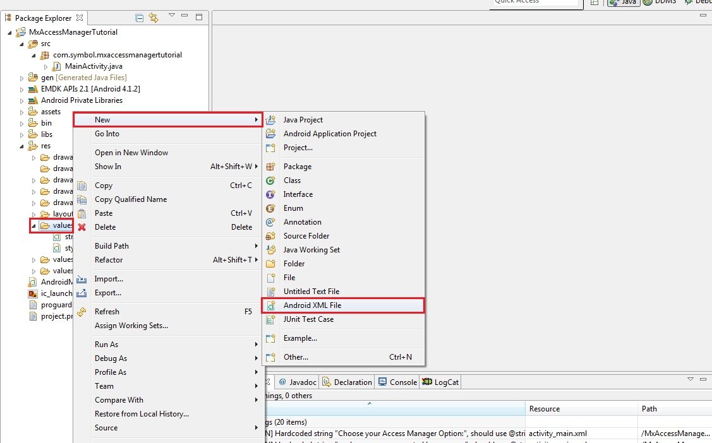
If you are using Android Studio, use following screen shot as a reference by right clicking on "values" to create a new Android XML file.
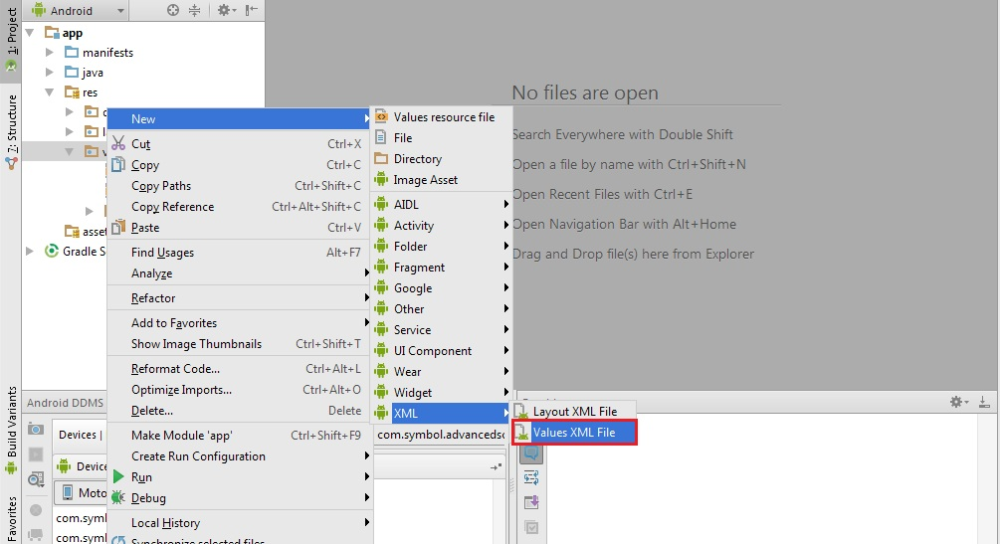
Provide the file name (Ex. arrays)
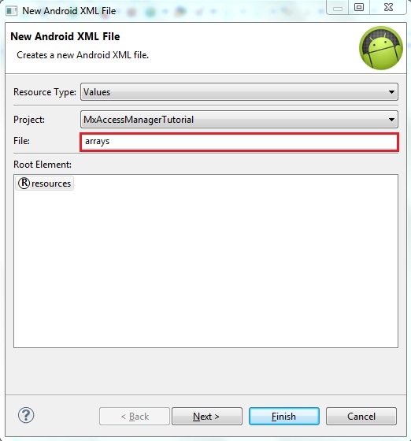
Click Finish and "arrays.xml" file will be created under "res/values".
Add the following code that declare arrays in
<resources>tag.<!-- Array for System Settings Menu --> <string-array name="system_settings_array"> <item>Full Access</item> <item>Reduced Access</item> </string-array> <!-- Array for delete packages options --> <string-array name="delete_packages_array"> <item>Delete NO Packages</item> <item>Delete Specified Packages(s)</item> <item>Delete ALL Packages</item> </string-array> <!-- Array for Add packages options --> <string-array name="add_packages_array"> <item>Add NO Packages</item> <item>Add Specified Packages(s)</item> </string-array>Let us refer UI elements with their respective on click listeners in the
onCreatemethod.// Reference of Set Button setButton = (Button) findViewById(R.id.buttonSet); // On Click Listener Call for Set Button setButton.setOnClickListener(onClickListsner); // Reference for White List Layout whiteListLayout = (RelativeLayout) findViewById(R.id.whitelist_layout); // Reference for Radio Group that has Radio Buttons radioGroup = (RadioGroup) findViewById(R.id.radioGroupAccess); // On Checked Change Listener for Radio Buttons in a Radio Group radioGroup.setOnCheckedChangeListener(onCheckedChangeListener); // Reference for Add and Delete Package Edit Texts deletePackageEditText = (EditText) findViewById(R.id.et_delete_package); AddPackageEditText = (EditText) findViewById(R.id.et_add_package); // Reference for settings, Add Package and Delete Package drop downs settingsAccessSpinner = (Spinner) findViewById(R.id.settings_access_spinner); deletePackageSpinner = (Spinner) findViewById(R.id.delete_package_spinner); addPackageSpinner = (Spinner) findViewById(R.id.add_package_spinner); // Adapter to hold the list system settings menu options dataAdapter = new ArrayAdapter<String>(this, android.R.layout.simple_spinner_item, getResources() .getStringArray(R.array.system_settings_array)); dataAdapter .setDropDownViewResource(android.R.layout.simple_spinner_dropdown_item); // Set adapter to settings drop down settingsAccessSpinner.setAdapter(dataAdapter); // Adapter to hold the list delete package options dataAdapter = new ArrayAdapter<String>(this, android.R.layout.simple_spinner_item, getResources() .getStringArray(R.array.delete_packages_array)); dataAdapter .setDropDownViewResource(android.R.layout.simple_spinner_dropdown_item); // Set adapter to delete package drop down deletePackageSpinner.setAdapter(dataAdapter); // Adapter to hold the list add package options dataAdapter = new ArrayAdapter<String>(this, android.R.layout.simple_spinner_item, getResources() .getStringArray(R.array.add_packages_array)); dataAdapter .setDropDownViewResource(android.R.layout.simple_spinner_dropdown_item); // Set adapter to add package drop down addPackageSpinner.setAdapter(dataAdapter); // Call to common On Item Selected Listener for all drop downs based on // view ID. settingsAccessSpinner.setOnItemSelectedListener(onItemSelectedListener); deletePackageSpinner.setOnItemSelectedListener(onItemSelectedListener); addPackageSpinner.setOnItemSelectedListener(onItemSelectedListener);So we have completed the
onCreatemethod. Here is the screen capture of part of this method.Note: Please read detailed comments in the code to get significance of each attribute.
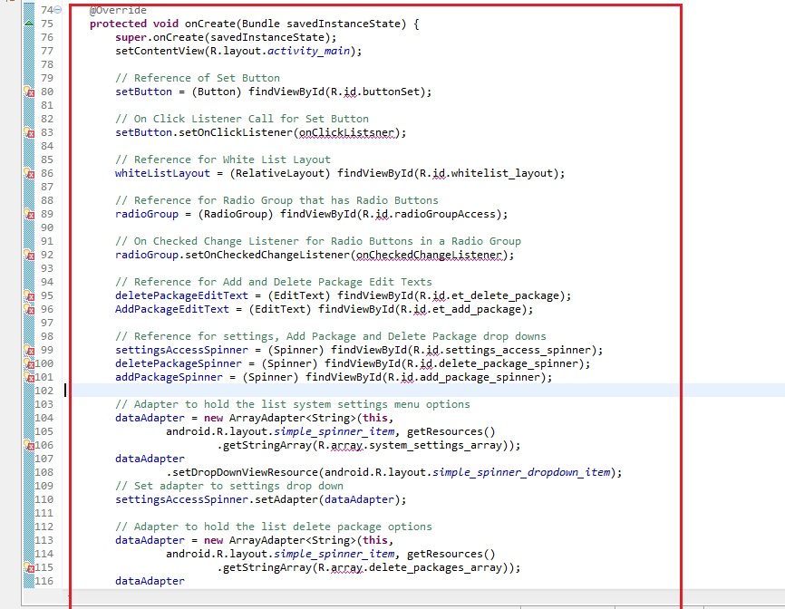
At this point, you will see few of errors. This is because we have not implemented respective on click listeners yet. Let us implement them one by one.
First, we will implement
OnCheckedChangeListeneron Radio Group that is used to enable/disable white list mode. So when it is enabled, the user will see a whitelist layout, which is a view that has some spinners to perform further configurations. When whitelist is disbaled, the whitelist layout is hidden to the user.// On checked change listener for Radio Buttons of Radio Group private OnCheckedChangeListener onCheckedChangeListener = new OnCheckedChangeListener() { @Override public void onCheckedChanged(RadioGroup group, int checkedId) { switch (checkedId) { // Single User Mode Without White List case R.id.radio_without_whitelist: // Set the white list flag to false isWhiteListActive = false; // Clear all the edit texts deletePackageEditText.setText(""); AddPackageEditText.setText(""); // Hide the White List Layout whiteListLayout.setVisibility(View.GONE); break; // Single User Mode With White List case R.id.radio_with_whitelist: // Set the white list flag to false isWhiteListActive = true; // Show the White List Layout whiteListLayout.setVisibility(View.VISIBLE); break; default: break; } } };Note: While importing, select Radio Group and not compound button widget.
The
OnCheckedChangeListenerfor Radio Group looks like: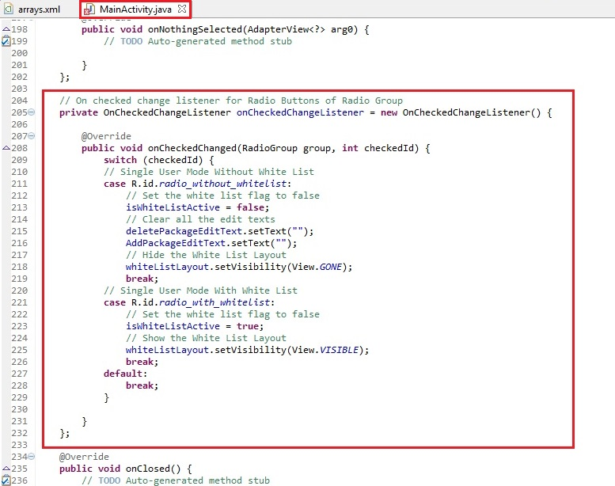
We have implemented a
onItemSelectedListenerfor all three spinners that will take respective actions based on the spinner ID.// Common On Item Selected Listener for all drop downs based on View ID private OnItemSelectedListener onItemSelectedListener = new OnItemSelectedListener() { @Override public void onItemSelected(AdapterView<?> parent, View view, int position, long id) { // Get View Id of user selected drop down int spinnerID = parent.getId(); switch (spinnerID) { // System Settings drop down is selected case R.id.settings_access_spinner: settingsSpinnerPosition = ++position; break; // Delete Package drop down is selected case R.id.delete_package_spinner: deletePackageSpinnerPosition = position; // Show/Hide delete package Edit Text based on user selection if (deletePackageSpinnerPosition == 1) // Show the delete package Edit Text deletePackageEditText.setVisibility(View.VISIBLE); else // Hide the delete package Edit Text deletePackageEditText.setVisibility(View.GONE); break; // Add Package drop down is selected case R.id.add_package_spinner: addPackageSpinnerPosition = position; // Show/Hide Add package Edit Text based on user selection if (addPackageSpinnerPosition == 1) // Show the Add package Edit Text AddPackageEditText.setVisibility(View.VISIBLE); else // Hide the Add package Edit Text AddPackageEditText.setVisibility(View.GONE); break; default: break; } } @Override public void onNothingSelected(AdapterView<?> arg0) { // TODO Auto-generated method stub } };The
onItemSelectedListenerfor spinners looks like: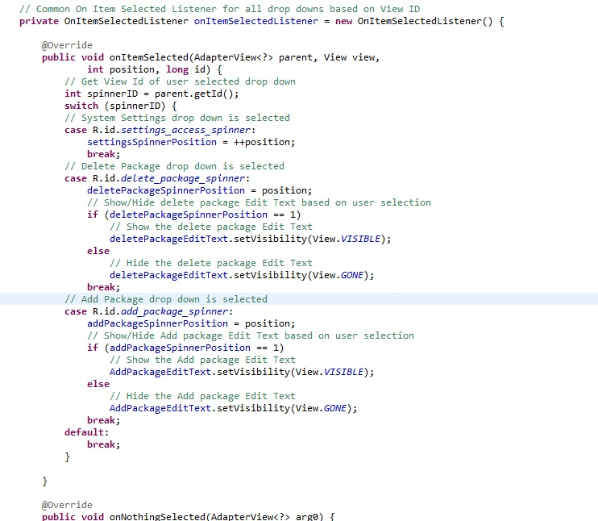
Now we will implement the
onClickListenerfor the set Button. this listener will call methodmodifyAccessManagerProfileXMLthat forms an XML based on users selection and sets the changes to the Profile.// On Click Listener for Set Button private OnClickListener onClickListsner = new OnClickListener() { @Override public void onClick(View view) { // TODO Auto-generated method stub int id = view.getId(); switch (id) { case R.id.buttonSet: // Call modifyAccessManagerProfileXML method to set the user // selected changes modifyAccessManagerProfileXML(isWhiteListActive); break; default: break; } }};
The
onClickListenerfor set Button looks like: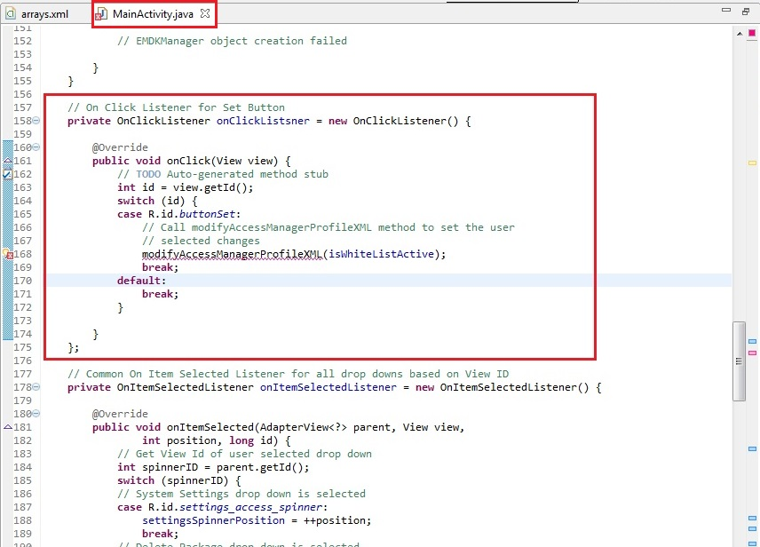
Finally, we will implement
modifyAccessManagerProfileXMLmethod. This is the method that actually implements Access Manager configurations set by the user. It prepares an xml input for theprocessProfilemethod based on "value" attribute of different Access Manager configurations. It then calls thehandleEMDKResultmethod that we have already created to handle the EMDKResults and display the output.Note: Please refer to code comments of
modifyAccessManagerProfileXMLmethod to understand more about "value" attribute. The global integres hold these "value" attributes based on user selection of various Access Manager features (Enable/Disable Whitelist, System Settings, Add/Delete Packages to/from whitelist etc.).So these global integer variables are set to the respective Access Manager attributes while forming the XML input, which is then passed to the
processProfilemethod.// Method to modify Access Manager settings based on user selection and set // them in Profile Manager private void modifyAccessManagerProfileXML(boolean isWhiteListActive) {
} }// Prepare XML to modify the existing profile settings String[] modifyData = new String[1]; // Check if the user has selected with/without white list option // from radio group in order to form modifyData xml accordingly. if (isWhiteListActive) { // User has selected Single User Mode With White list modifyData[0] = "<?xml version=\"1.0\" encoding=\"utf-8\"?>" + "<characteristic type=\"Profile\">" + "<parm name=\"ProfileName\" value=\"AccessManagerProfile\"/>" + "<characteristic type=\"AccessMgr\">" + "<parm name=\"OperationMode\" value=\"2\"/>" + "<parm name=\"SystemSettings\" value=\"" + settingsSpinnerPosition + "\"/>"; // Set the delete package settings to the xml based on user // selection from // delete package drop down stored in // deletePackageSpinnerPosition integer // deletePackageSpinnerPosition = 0 -> Delete No Package // deletePackageSpinnerPosition = 1 -> Delete Specific // Packages(s) // deletePackageSpinnerPosition = 2 -> Delete All Packages if (deletePackageSpinnerPosition == 1) { // Get package names to be deleted from white list modifyData[0] = modifyData[0] + "<parm name=\"DeletePackagesAction\" value=\"1\"/>" + "<parm name=\"DeletePackageNames\" value=\"" + deletePackageEditText.getText().toString() + "\"/>"; } else { // Delete No Package or Delete All Package based on // deletePackageSpinnerPosition integer modifyData[0] = modifyData[0] + "<parm name=\"DeletePackagesAction\" value=\"" + deletePackageSpinnerPosition + "\"/>"; } // Set the Add package settings to the xml based on user // selection from // Add package drop down stored in // addPackageSpinnerPosition integer // addPackageSpinnerPosition = 0 -> Add No Package // addPackageSpinnerPosition = 1 -> Add Specific // Packages(s) if (addPackageSpinnerPosition == 1) { // Get package names to be added in the white list modifyData[0] = modifyData[0] + "<parm name=\"AddPackagesAction\" value=\"1\"/>" + "<parm name=\"AddPackageNames\" value=\"" + AddPackageEditText.getText().toString() + "\"/>"; } else { // Add No Package modifyData[0] = modifyData[0] + "<parm name=\"AddPackagesAction\" value=\"" + addPackageSpinnerPosition + "\"/>"; } modifyData[0] = modifyData[0] + "</characteristic>" + "</characteristic>"; } else { // User has selected Single User Mode Without White list modifyData[0] = "<?xml version=\"1.0\" encoding=\"utf-8\"?>" + "<characteristic type=\"Profile\">" + "<parm name=\"ProfileName\" value=\"AccessManagerProfile\"/>" + "<characteristic type=\"AccessMgr\">" + "<parm name=\"OperationMode\" value=\"1\"/>" + "</characteristic>" + "</characteristic>"; } // Call process profile to modify the Access Manager Profile of // specified profile // name based on modifyData XML formed above EMDKResults results = profileManager.processProfile(profileName, ProfileManager.PROFILE_FLAG.SET, modifyData); if (results.statusCode == EMDKResults.STATUS_CODE.CHECK_XML) { // Method call to handle EMDKResult handleEMDKResult(results); } else { // Show dialog of Failure AlertDialog.Builder builder = new AlertDialog.Builder(this); builder.setTitle("Failure"); builder.setMessage("Failed to set device clock...") .setPositiveButton("OK", new DialogInterface.OnClickListener() { public void onClick(DialogInterface dialog, int id) { } }); AlertDialog alert = builder.create(); alert.show();
The modifyAccessManagerProfileXML method looks like:
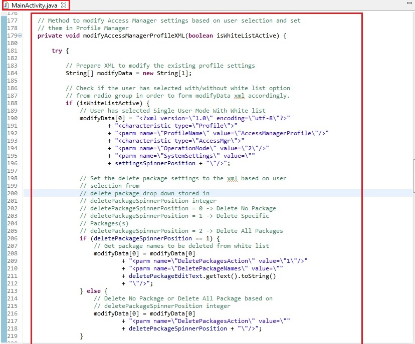
You can see all the errors are gone now. The sample XML for "without Whitelist" feature, which is passed to processProfile method looks like:
modifyData[0] = "<?xml version=\"1.0\" encoding=\"utf-8\"?>"
+ "<characteristic type=\"Profile\">"
+ "<parm name=\"ProfileName\" value=\"MxAccessManagerProfile\"/>"
+ "<characteristic type=\"AccessMgr\">"
+ "<parm name=\"OperationMode\" value=\"1\"/>"
+ "</characteristic>" + "</characteristic>";
That's it!!! We are done with all the coding and configuration part that will allow us to implement Access Manager both programmatically as well as using wizard. Now let us run and test the application.
Running the Application
Connect the device to a USB port.
Note: Make sure the device has USB debugging enabled.
Run the application.
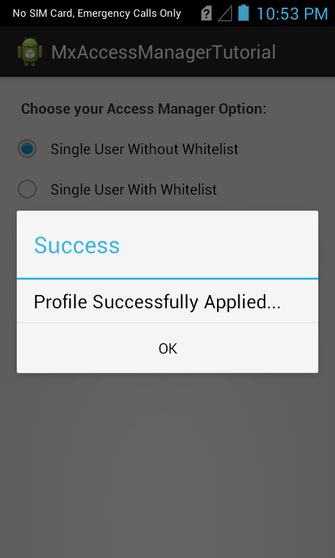
You can see an Alert Dialog with a success message, which indicates that the app has successfully implemented settings that we had configured in the wizard. You won't see any change as we had disabled the whitelist in the wizard.
Note: In case of any errors, you will see a Failure status with respective error message in that dialog.
Now you can see the two Radio Buttons of which first is checked. It means we are in a single user mode without whitelist.
Click the Radio Button Single user mode with whitelist and the respective view will be visible to user
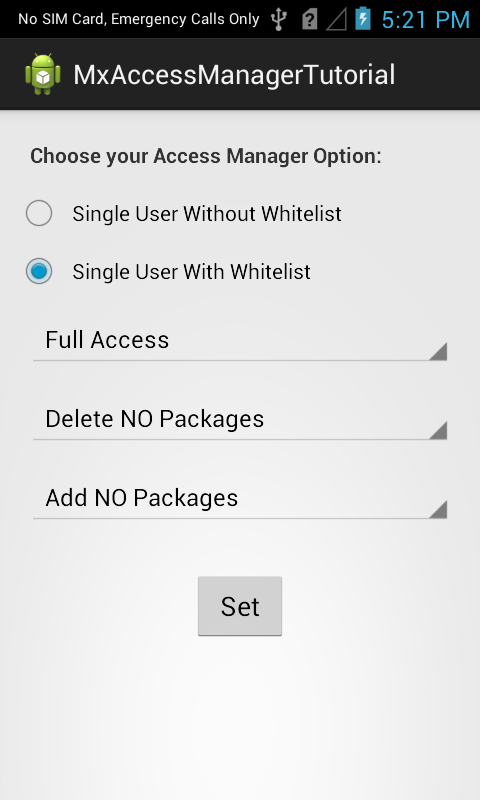
Now you have enabled whitelist. It means you can now add/remove applications to/from the whitelist. Let us add few applications to the whitelist.
Select "Add No Packages" drop-down and select "Add specified packages" option to add few applications to the whitelist.
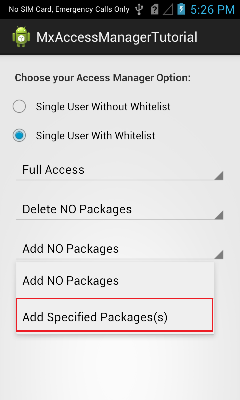
It will display an Edit Text to provide the package names of the applications that you want to add to whitelist.
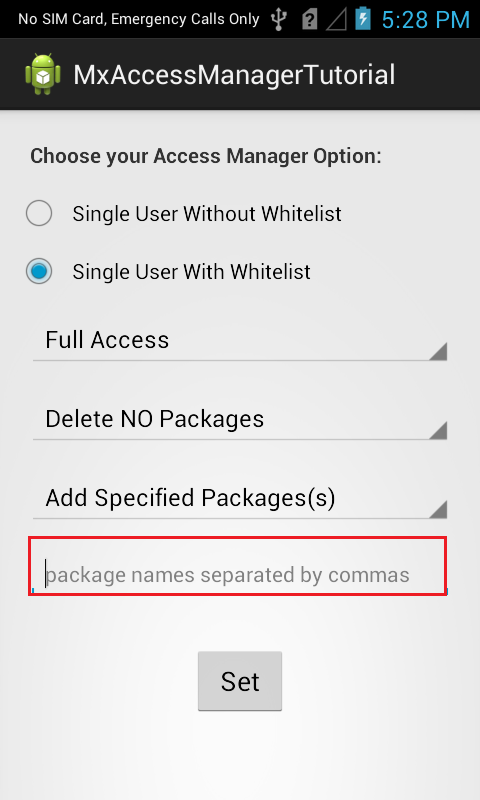
Provide package names of few applications separated by commas. (Ex. com.symbol.mxaccessmanagertutorial, com.allinstalledapps, com.symbol.mxgprstutorial).
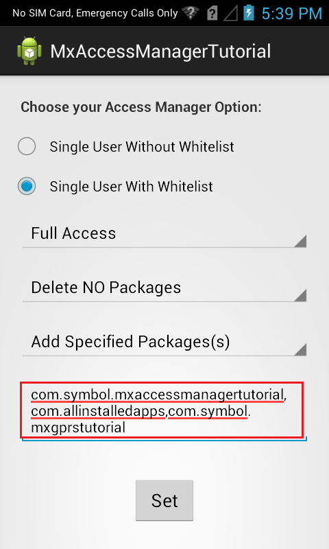
Note: Make sure to add current application to the white list in order to set access restrictions on other applications. Otherwise user won't be able to access the current application that has access restrictions on other applications and eventually user has to perform Enterprise Reset on the device to get the default settings back.
Keep the Full Access and press the "Set" button.
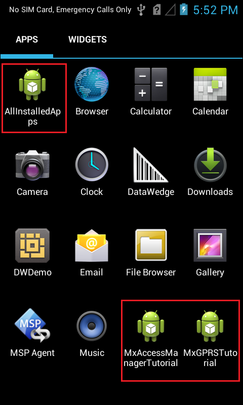
You can see that the device is in single user mode with whitelist. It shows the three applications in the whitelist whose package names we had provided in Add Package Edit Text. The other developed apps are not visible in this mode.
Now let us remove one application from the whitelist by going to our app and adding the package name in the delete package Edit Text.
But if you start the application, it will disable whitelist as we have set that feature in the wizard. So we have to comment some code to ensure delete package from the whitelist feature works fine.
Go to
onOpenedmethod and comment the highlighted code in the following snapshot.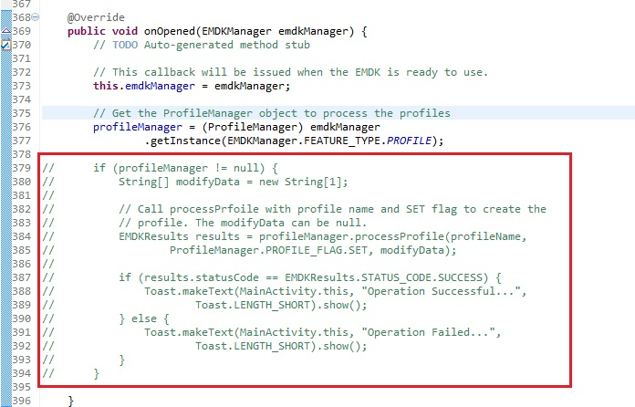
Note: You can uncomment this code later after verifying "Delete Package from Whitelist" feature.
Run the application again. Check the Radio Button "Single User with Whitelist" -> click "Delete No Packages" drop down -> Select "Delete Specified Packages(s)" option -> Add name of the application package in Edit Text that you want to remove from whitelist (Ex. com.allinstalledapps).
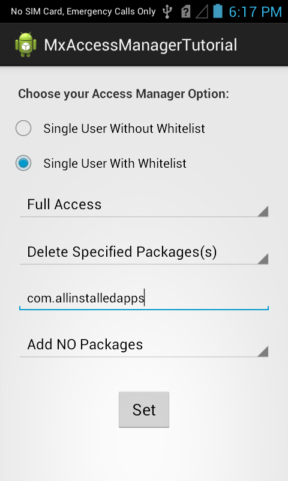
Click "Set" button.
You can see that the application with package name "com.allinstalledapps" has been removed from the whitelist as there are only two application whereas we had added three application previously in the whitelist.
In this way, you can configure and test various features of MX Access Manager on your Zebra device.
Important Programming Tips
It is required to do the following changes in the application's AndroidManifest.xml:
Note:
- Include the permission for EMDK:
<uses-permission android:name="com.symbol.emdk.permission.EMDK"/>Note:
- Use the EMDK library:
<uses-library android:name="com.symbol.emdk"/>Use DataWedge v1.7.12 or higher version to test the
ProfileManager.processProfile()method for DataWedge profiles.
What's Next
Now that you have learned how to configure access to different applications on your device through your application using MX Access Manager, let us try to understand and implement some of the other MX features. So in the next tutorial, we will concentrate on the "Certificate Manager" MX feature and try to explore this feature by creating a tutorial.